去模糊-解决失焦问题的黑科技
本文主要是讲一些为了提前解决失焦的黑科技。传统的一些去模糊方法就不写了，其实大部分时候都还是得到一张失焦图片然后老老实实用传统方法，比如维纳滤波、人工智能去模糊。但本文侧重点是讲一些黑科技，扩展视野。
主要参考 Wang Hawk 的分享(https://zhuanlan.zhihu.com/p/570452119)，特此感谢。感觉讲的特别好，也可以移步去查看其文章，下面评论区也有很多有价值的讨论。
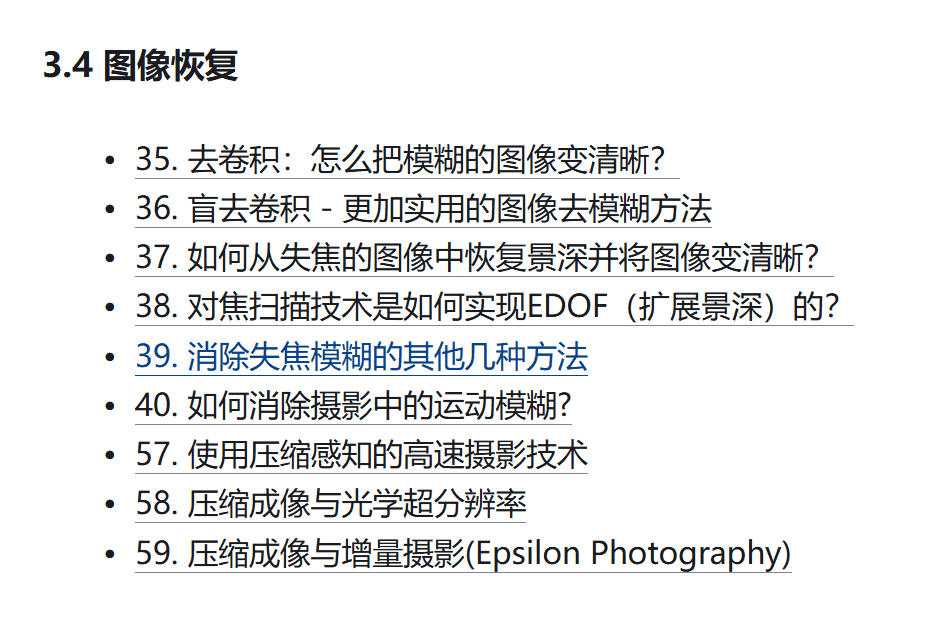
失焦问题分析
其实就是不在景深范围内，他的 PSF 如下：
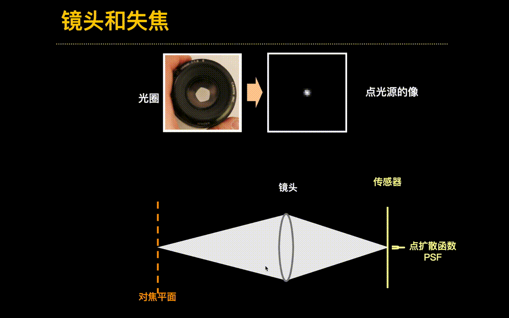
各个方法快速浏览
只是浅尝辄止讲讲有哪些技术，具体细节可能很少谈。
对焦栈
对焦栈其实就是一组图像，保证场景中每个物体都能有一张图像上是清晰的，如下所示。怎么获取的呢？其实就是手动调像距或者物距...
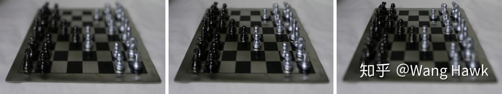
获取这一组图片后，就用算法融合。有两个方案：一个是用权重，即先对齐图像、然后计算权重、最后融合；另一个是用光流，也是先对其图像，然后用光流融合。
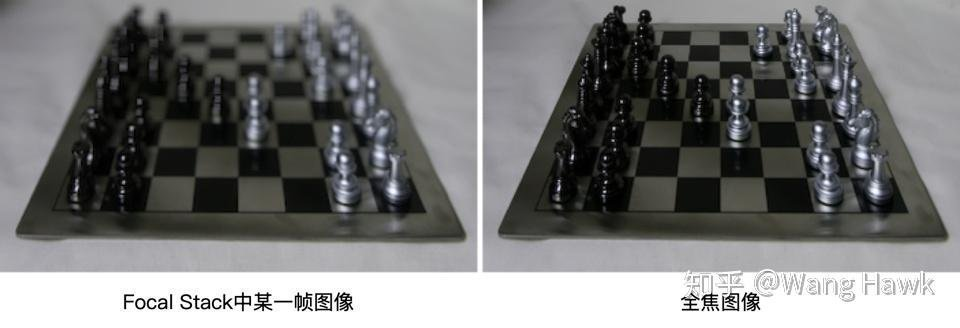
编码光圈
光圈不是传统的光圈，而是提前涉及的形状：
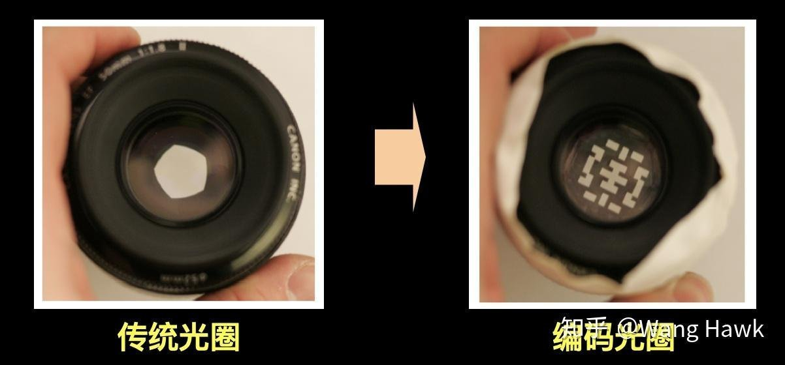
传统光圈中估计，很多时候很难分清楚哪个更清晰，特别是比正确尺寸略小的卷积核的去卷积结果很难和正确尺寸的结果相区分。而使用编码光圈，不管是偏大的卷积核还是偏小的卷积核，在去卷积后都会出现振铃效应。因此编码光圈更容易让我们估计处正确的尺寸卷积核。
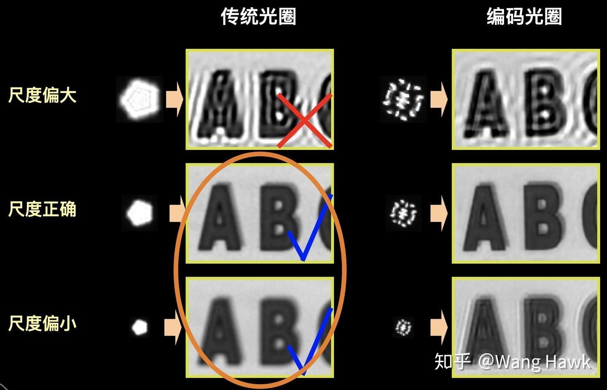
动态像距
如下所示，在马达的作用下，传感器可以在一定范围内来回移动，镜头不动。这样像距会变化，从而对焦距离会改变。
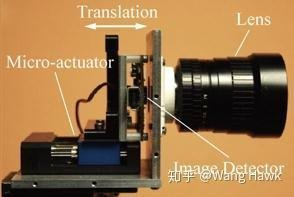
这样其实采集的图片都是糊的。但根据作者的模型推演，此时图像的模糊程度与场景中物体离镜头的距离无关：即每个点的模糊都可以用同一个 PSF 来刻画（传统的图片不同物距 PSF 尺寸不一样）。因此作者只需要利用一个基本的去卷积算法即可对图像进行去卷积，从而获取到全焦图像。
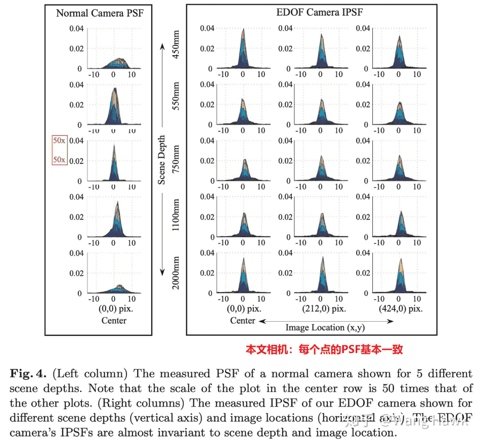
波前编码
如下图所示，有个叫相位板玩意。它是物理层面改变非相干光的波前相位特性来实现的，光线通过这个相位板后不再像通过普通镜头一样汇聚到一点上，而是会均匀的散布，这样使得不同物距的PSF 接近一致，这样获取的原始图像是均匀模糊的。和上面的方法一样，只用一个基本的去卷积算法即可去模糊。
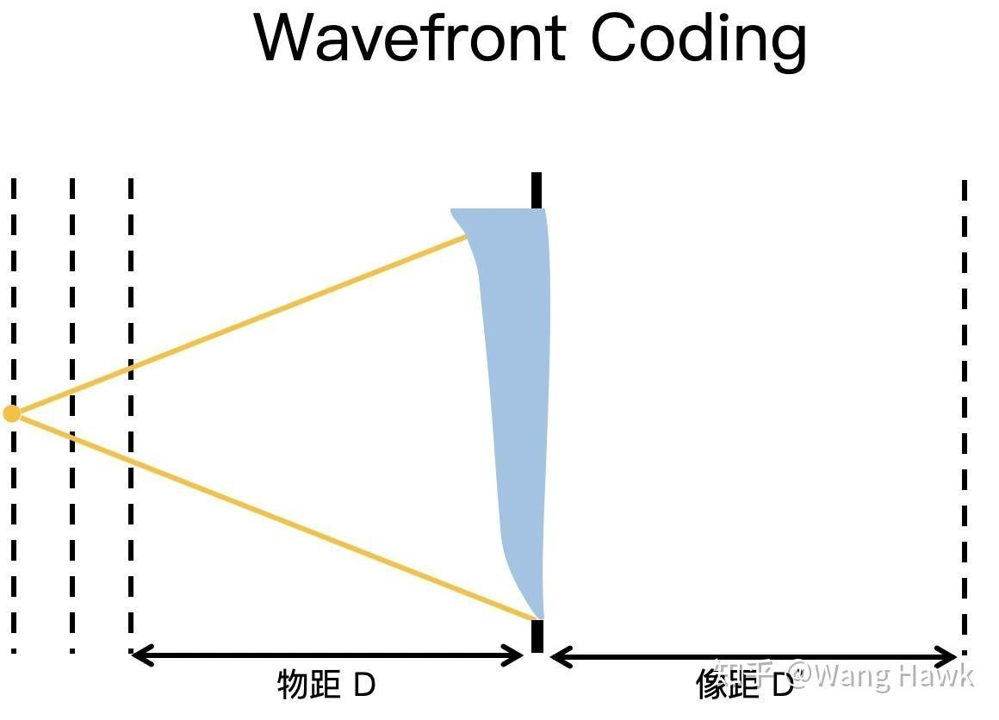
晶格透镜
这是通过在普通的透镜前增加多个不同焦距的小的透镜实现的。总之也是利用物理特性，能从拍摄的模糊图返回出来。这个方法主要和频率部分打交道比较多。
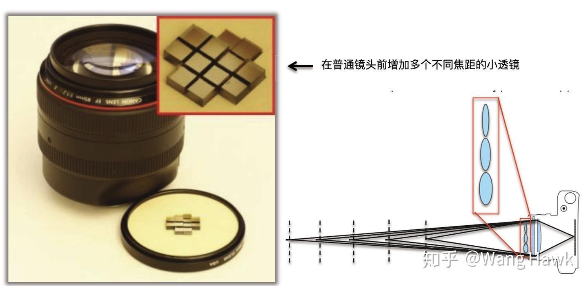
扩散编码
如下所示，通过在传统透镜中加入特殊的扩散器来实现，这个扩散器使得入射光按照某种规则散射到传感器上，最终让不同物距的 PSF 都一致，和之前一样，简单的去卷积即可完成。
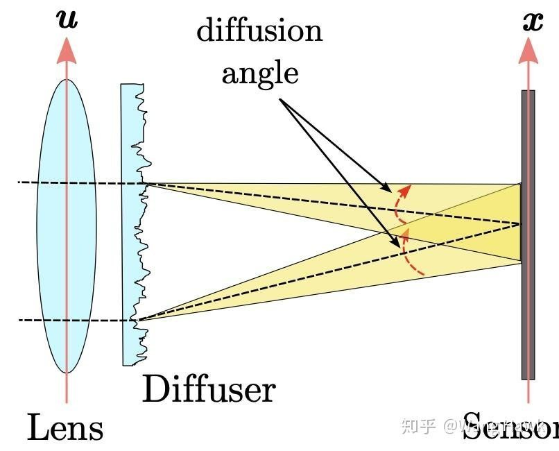
解决此问题带来的其他好处
1. 有些方法因此可以推算深度图
2. 先摄影再对焦
具体细节
请查看 Wang Hawk 的记录，写的蛮清楚的。注意作者的笔记经常有穿插，比如讲到 A 方法会提一嘴 B 方法，这个时候可以略过，专注于 A 方法的阅读。
1. 对焦栈: https://zhuanlan.zhihu.com/p/99637413 (本地：./材料/33. 摄影-怎样对焦才能让不同距离的物体都拍摄清晰.html)
2. 编码光圈: https://zhuanlan.zhihu.com/p/108060589 (本地：./材料/37. 如何从失焦的图像中恢复景深并将图像变清晰.html)
3. 动态像距: https://zhuanlan.zhihu.com/p/114602499 (本地：./材料/38. 对焦扫描技术是如何实现EDOF（扩展景深）的.html)
4. 波前编码: https://zhuanlan.zhihu.com/p/117636595 (本地：./材料/39. 消除失焦模糊的其他几种方法.html)
5. 晶格透镜: https://zhuanlan.zhihu.com/p/117636595 (本地：./材料/39. 消除失焦模糊的其他几种方法.html)
6. 扩散编码: https://zhuanlan.zhihu.com/p/117636595 (本地：./材料/39. 消除失焦模糊的其他几种方法.html)